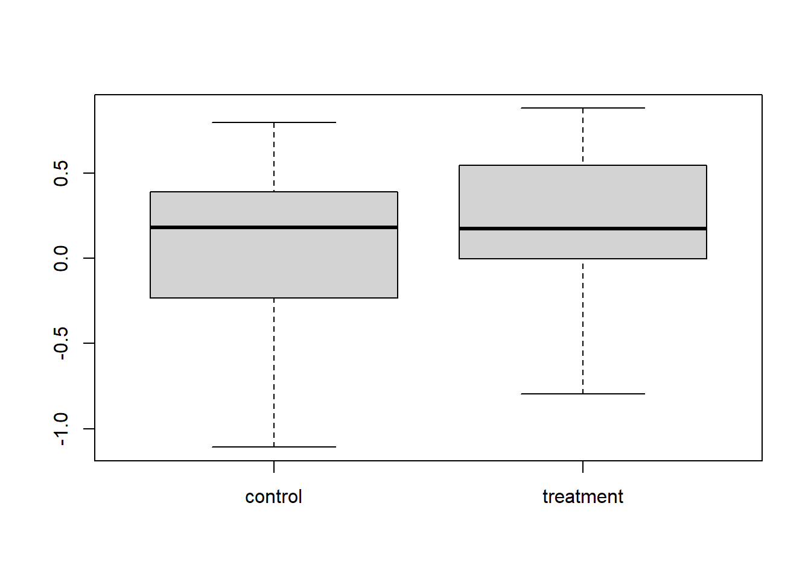
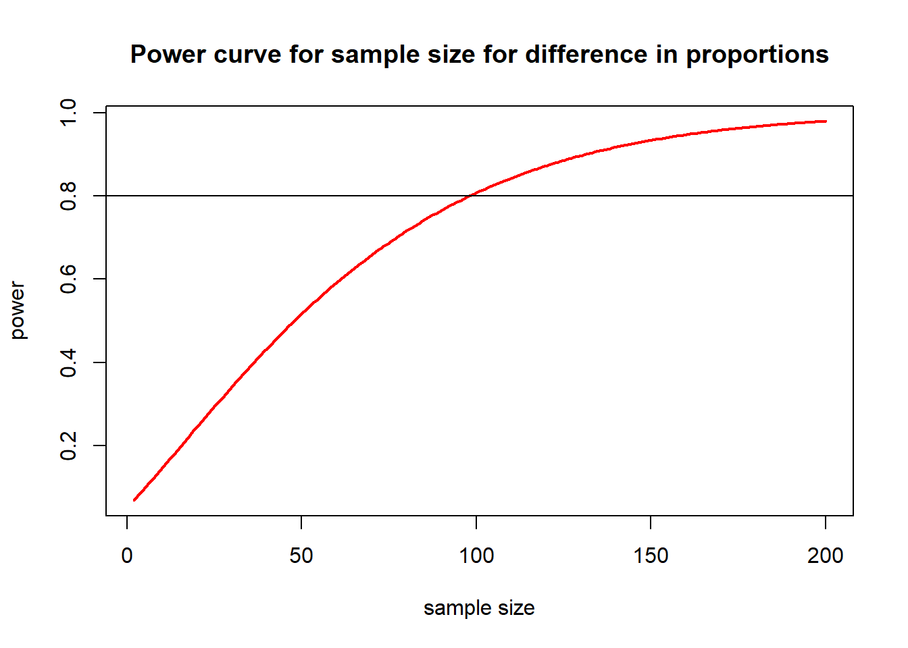
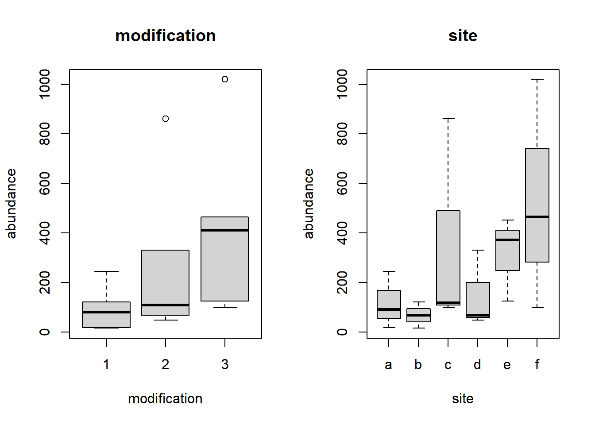

¿Qué es el análisis de poder y por qué es importante?
Recopilas datos para responder una pregunta, generalmente con el objetivo de detectar un efecto particular (por ejemplo, efecto del tratamiento). La potencia de tu prueba es la probabilidad de detectar un efecto (es decir, obtener un valor p < 0.05) con el diseño experimental que tienes y el tamaño de efecto que esperas o consideras significativo.
Comenzaré simulando un conjunto de datos que tiene un efecto (una diferencia entre el grupo de control y el grupo de tratamiento), y veremos si podemos detectar el efecto. Realizaremos una simple prueba t de dos muestras como ejemplo.
set.seed(1) # Establece la semilla del generador de números aleatoriosN <-20# el tamaño de la muestratrt.effect <-0.2# diferencia entre las medias del control y del tratamientosigma <-0.5# desviación estándar de los grupos de control y tratamientomean.con <-0# media del grupo de controlmean.trt <- mean.con + trt.effect # media del grupo de tratamientocontrol <-rnorm(N, mean.con, sigma) # 20 puntos de datos para el grupo de control tomados de una distribución normal con tamaño de muestra, media y d.e. conocidostreatment <-rnorm(N, mean.trt, sigma) # datos para el grupo de tratamientot.test(control, treatment) # realiza una prueba t para comparar los grupos de control y tratamiento
Welch Two Sample t-test
data: control and treatment
t = -0.71923, df = 37.917, p-value = 0.4764
alternative hypothesis: true difference in means is not equal to 0
95 percent confidence interval:
-0.3872163 0.1842117
sample estimates:
mean of x mean of y
0.09526194 0.19676424
Podemos ver las diferencias entre los grupos con un diagrama de caja y probar esas diferencias con una prueba t:
boxplot(cbind(control, treatment))

t.test(control, treatment)
Welch Two Sample t-test
data: control and treatment
t = -0.71923, df = 37.917, p-value = 0.4764
alternative hypothesis: true difference in means is not equal to 0
95 percent confidence interval:
-0.3872163 0.1842117
sample estimates:
mean of x mean of y
0.09526194 0.19676424
Sabemos que hay un efecto del tratamiento, con un tamaño de efecto de 0.2, pero la prueba no pudo detectarlo. Esto se conoce como error de tipo II. Repitamos el mismo experimento con exactamente la misma configuración.
Welch Two Sample t-test
data: control and treatment
t = -2.3471, df = 37.416, p-value = 0.02432
alternative hypothesis: true difference in means is not equal to 0
95 percent confidence interval:
-0.57817515 -0.04253493
sample estimates:
mean of x mean of y
-0.08359522 0.22675982
Esta vez detectamos un efecto. Esto siempre ocurre, sin importar cuál sea tu diseño experimental, si hay un efecto presente, tienes alguna posibilidad de detectarlo, esto se llama potencia. Para no perder tiempo y dinero, solo debemos realizar experimentos que tengan alta potencia, es decir, alta probabilidad de detectar un efecto si existe. Podemos calcular la potencia de este experimento.
Análisis de poder simple con ‘pwr’
Existen varios paquetes que realizan análisis de potencia en R. pwr realiza cosas simples hasta lm y simR realiza modelos más complejos modelos mixtos y glms.
Primero, instala el paquete pwr.
# install.packages("pwr")library(pwr)
Para realizar cálculos de potencia en pwr, debes dejar uno de los valores como NULL y completar los demás. Luego te proporcionará el valor para el que dejaste en blanco.
Aquí usaré la función pwr.t.test y dejaré en blanco el valor de potencia. Calculará la potencia para el diseño experimental dado el tamaño de muestra y el tamaño de efecto especificados. Ten cuidado; la variable d, que en el archivo de ayuda se llama tamaño de efecto, es nuestro efecto de tratamiento (diferencia entre medias) dividido por la desviación estándar.
pwr.t.test(n =20, d = trt.effect / sigma, sig.level =0.05, power =NULL)
Two-sample t test power calculation
n = 20
d = 0.4
sig.level = 0.05
power = 0.2343494
alternative = two.sided
NOTE: n is number in *each* group
¡Ups! La potencia es solo del 25%. Esto significa que, dado el efecto que esperamos y con este tamaño de muestra, solo detectaremos ese efecto el 25% del tiempo. Entonces, probablemente no valga la pena hacer este experimento. Podríamos aumentar el tamaño de muestra para aumentar la potencia.
Ahora podemos utilizar nuestros cálculos de potencia para determinar qué tamaño de muestra nos dará una buena potencia, siendo el 80% el umbral habitual. Repetimos el cálculo pero ahora dejando en blanco la variable N y estableciendo la potencia en 0.8.
pwr.t.test(n =NULL, d = trt.effect / sigma, sig.level =0.05, power =0.8)
Two-sample t test power calculation
n = 99.08032
d = 0.4
sig.level = 0.05
power = 0.8
alternative = two.sided
NOTE: n is number in *each* group
Esto nos indica que necesitamos un tamaño de muestra (para cada grupo) de 100 para lograr una potencia del 80% para detectar nuestro efecto. Esto obviamente es importante saberlo si las medidas replicadas son costosas o requieren mucho tiempo para recopilar.
También podemos trazar la potencia para varios tamaños de muestra. Aquí tienes un código que calcula y traza la potencia para tamaños de muestra desde 2 hasta 200.
nvals <-seq(2, 200, length.out =200)powvals <-sapply(nvals, function(x) pwr.2p.test(h = trt.effect / sigma, n = x, sig.level =0.05)$power)plot(nvals, powvals,xlab ="sample size", ylab ="power",main ="Power curve for sample size for difference in proportions",lwd =2, col ="red", type ="l")abline(h =0.8)

El paquete pwr tiene varias funciones, pero todas funcionan de manera similar.
Función
Descripción
pwr.2p.test
dos proporciones (n iguales)
pwr.2p2n.test
dos proporciones (n desiguales)
pwr.anova.test
ANOVA de un factor equilibrado
pwr.chisq.test
prueba de chi-cuadrado
pwr.f2.test
modelo lineal general
pwr.p.test
proporción (una muestra)
pwr.r.test
correlación
pwr.t.test
pruebas t (una muestra, dos muestras, emparejadas)
pwr.t2n.test
prueba t (dos muestras con n desiguales)
Generalmente es un poco complicado especificar el tamaño de efecto, puedes encontrar una buena guía para este paquete aquí.
Ten en cuenta que especificar el tamaño de efecto no es una pregunta estadística, es una pregunta ecológica sobre qué tamaño de efecto es significativo para tu estudio en particular. Por ejemplo, ¿quieres poder detectar una disminución del 10% en la abundancia de un animal raro o te conformarías con un diseño de muestreo capaz de detectar una disminución del 25%?
Análisis con modelos lineales y mixtos con ‘simr’
Si estás llevando a cabo un experimento con factores aleatorios y necesitas realizar un modelo mixto y tu análisis de potencia debe reflejar eso, esto es mucho más complicado que los ejemplos anteriores y deberemos utilizar métodos de simulación. El paquete simR está diseñado para esto.
Análisis de potencia con un estudio piloto. Hemos realizado un estudio piloto y ahora queremos decidir cómo asignar el muestreo para el estudio completo. El estudio busca un efecto de la modificación del estuario en la abundancia de una especie marina. Supongamos que tenemos los recursos para realizar un máximo de 72 muestras y queremos maximizar la potencia para una prueba de la variable categórica ‘modificación’.
Tenemos un conjunto de datos piloto ‘pilot’ que tiene un efecto fijo continuo de la temperatura, un efecto fijo de la modificación y un efecto aleatorio para el sitio (anidado dentro de la modificación). La variable de respuesta es la abundancia de una especie de interés.
Descarga estos datos piloto, Pilot.csv, impórtalos en R y cambia la variable de modificación a un factor (etiquetado como 1, 2 y 3, pero no como un entero).
Pilot <-read.csv(file ="Pilot.csv", header =TRUE)Pilot$modification <-factor(Pilot$modification)
Graficar la abundancia en función del sitio y los niveles del factor de modificación nos muestra que tenemos datos donde los sitios varían bastante dentro de cada modificación.
par(mfrow =c(1, 2))boxplot(abundance ~ modification, data = Pilot, main ="modification")boxplot(abundance ~ site, data = Pilot, main ="site")

Estos datos de conteo con un efecto aleatorio de sitio se modelan mejor con un modelo lineal mixto generalizado utilizando glmer() del paquete lme4.
library(lme4)Pilot.mod <-glmer(abundance ~ temperature + modification + (1| site), family ="poisson", data = Pilot)summary(Pilot.mod)
Generalized linear mixed model fit by maximum likelihood (Laplace
Approximation) [glmerMod]
Family: poisson ( log )
Formula: abundance ~ temperature + modification + (1 | site)
Data: Pilot
AIC BIC logLik deviance df.resid
153.3 157.7 -71.6 143.3 13
Scaled residuals:
Min 1Q Median 3Q Max
-1.2983 -0.4266 0.1293 0.4240 0.8410
Random effects:
Groups Name Variance Std.Dev.
site (Intercept) 0.006274 0.07921
Number of obs: 18, groups: site, 6
Fixed effects:
Estimate Std. Error z value Pr(>|z|)
(Intercept) 1.69024 0.09851 17.16 <2e-16 ***
temperature 4.08409 0.08875 46.02 <2e-16 ***
modification2 1.14103 0.09465 12.05 <2e-16 ***
modification3 2.39503 0.09538 25.11 <2e-16 ***
---
Signif. codes: 0 '***' 0.001 '**' 0.01 '*' 0.05 '.' 0.1 ' ' 1
Correlation of Fixed Effects:
(Intr) tmprtr mdfct2
temperature -0.692
modificatn2 -0.558 0.023
modificatn3 -0.696 0.226 0.565
Hay dos coeficientes que especifican los efectos de la modificación (ya que hay tres categorías de modificación). Para realizar un análisis de potencia, debemos especificar tamaños de efecto que sean ecológicamente significativos. Ten en cuenta que estos están en la escala del modelo, para un modelo poisson están en la escala logarítmica (y multiplicativos).
Ahora podemos usar la función powerSim para calcular la probabilidad de que un experimento con este tamaño de muestra pueda detectar un efecto de modificación, esto es la ‘potencia’. Quiero utilizar una prueba de razón de verosimilitudes (es decir, usar la función anova) para probar un efecto de modificación, así que lo especifico con el argumento lr.
boundary (singular) fit: see help('isSingular')
boundary (singular) fit: see help('isSingular')
boundary (singular) fit: see help('isSingular')
boundary (singular) fit: see help('isSingular')
boundary (singular) fit: see help('isSingular')
boundary (singular) fit: see help('isSingular')
boundary (singular) fit: see help('isSingular')
boundary (singular) fit: see help('isSingular')
boundary (singular) fit: see help('isSingular')
boundary (singular) fit: see help('isSingular')
boundary (singular) fit: see help('isSingular')
boundary (singular) fit: see help('isSingular')
boundary (singular) fit: see help('isSingular')
boundary (singular) fit: see help('isSingular')
boundary (singular) fit: see help('isSingular')
boundary (singular) fit: see help('isSingular')
boundary (singular) fit: see help('isSingular')
boundary (singular) fit: see help('isSingular')
boundary (singular) fit: see help('isSingular')
boundary (singular) fit: see help('isSingular')
boundary (singular) fit: see help('isSingular')
boundary (singular) fit: see help('isSingular')
boundary (singular) fit: see help('isSingular')
boundary (singular) fit: see help('isSingular')
boundary (singular) fit: see help('isSingular')
boundary (singular) fit: see help('isSingular')
boundary (singular) fit: see help('isSingular')
boundary (singular) fit: see help('isSingular')
boundary (singular) fit: see help('isSingular')
boundary (singular) fit: see help('isSingular')
boundary (singular) fit: see help('isSingular')
boundary (singular) fit: see help('isSingular')
boundary (singular) fit: see help('isSingular')
boundary (singular) fit: see help('isSingular')
boundary (singular) fit: see help('isSingular')
boundary (singular) fit: see help('isSingular')
boundary (singular) fit: see help('isSingular')
boundary (singular) fit: see help('isSingular')
boundary (singular) fit: see help('isSingular')
boundary (singular) fit: see help('isSingular')
boundary (singular) fit: see help('isSingular')
Power for predictor 'modification', (95% confidence interval):
46.00% (31.81, 60.68)
Test: Likelihood ratio
Based on 50 simulations, (0 warnings, 0 errors)
alpha = 0.05, nrow = 18
Time elapsed: 0 h 0 m 11 s
# este es un número pequeño de simulaciones para demostración, el valor predeterminado de 1000 es más apropiado
Así que esperamos tener un poder de alrededor del 45% para una prueba de razón de verosimilitud para ‘modificación’ con el número actual de observaciones. Esto es bastante bajo, nos gustaría ver un poder por encima del 80%, así que veamos cómo afecta el aumento del tamaño de la muestra.
¿Cómo podemos aumentar el poder? Aumentar las observaciones es deseable para aumentar el poder, pero en este diseño de muestreo, tenemos varias formas de agregar observaciones a tus datos. Podrías muestrear más sitios, pero mantener el número de muestras por sitio igual, o podrías mantener el número de sitios igual y muestrear más dentro de cada sitio.
xtabs(~ modification + site, data = Pilot)
site
modification a b c d e f
1 3 3 0 0 0 0
2 0 0 3 3 0 0
3 0 0 0 0 3 3
Actualmente hay 2 sitios por categoría de modificación y 3 observaciones por sitio. Intentemos aumentar el número de sitios. Hacemos esto utilizando la función extend para explorar cómo afectará el aumento del tamaño de la muestra al poder. Al utilizar along=site, agregaremos más sitios. Con nuestro presupuesto de 72 observaciones y 3 observaciones por sitio, tendríamos 24 sitios.
full1 <-extend(Pilot.mod, along ="site", n =24)xtabs(~site, data =attributes(full1)$newData)
boundary (singular) fit: see help('isSingular')
boundary (singular) fit: see help('isSingular')
Power for predictor 'modification', (95% confidence interval):
92.00% (80.77, 97.78)
Test: Likelihood ratio
Based on 50 simulations, (0 warnings, 0 errors)
alpha = 0.05, nrow = 72
Time elapsed: 0 h 0 m 11 s
Así que obtenemos alrededor del 90% de poder, suena genial. Para ver si agregar más observaciones por sitio haría que fuera mejor o peor, utilizamos el argumento within.
full2 <-extend(Pilot.mod, within ="site", n =12)xtabs(~site, data =attributes(full2)$newData)
boundary (singular) fit: see help('isSingular')
boundary (singular) fit: see help('isSingular')
boundary (singular) fit: see help('isSingular')
boundary (singular) fit: see help('isSingular')
boundary (singular) fit: see help('isSingular')
boundary (singular) fit: see help('isSingular')
boundary (singular) fit: see help('isSingular')
boundary (singular) fit: see help('isSingular')
boundary (singular) fit: see help('isSingular')
boundary (singular) fit: see help('isSingular')
boundary (singular) fit: see help('isSingular')
boundary (singular) fit: see help('isSingular')
Power for predictor 'modification', (95% confidence interval):
64.00% (49.19, 77.08)
Test: Likelihood ratio
Based on 50 simulations, (0 warnings, 0 errors)
alpha = 0.05, nrow = 72
Time elapsed: 0 h 0 m 11 s
Eso solo nos da alrededor del 60% de poder. Entonces, para estos datos, diseño de muestreo y pregunta, es mejor agregar más sitios. Por supuesto, también puedes hacer combinaciones, tal vez duplicar los sitios y duplicar las observaciones por sitio.
full3 <-extend(Pilot.mod, within ="site", n =6)full3 <-extend(full3, along ="site", n =12)xtabs(~site, data =attributes(full3)$newData)
boundary (singular) fit: see help('isSingular')
boundary (singular) fit: see help('isSingular')
boundary (singular) fit: see help('isSingular')
boundary (singular) fit: see help('isSingular')
boundary (singular) fit: see help('isSingular')
boundary (singular) fit: see help('isSingular')
Power for predictor 'modification', (95% confidence interval):
66.00% (51.23, 78.79)
Test: Likelihood ratio
Based on 50 simulations, (0 warnings, 0 errors)
alpha = 0.05, nrow = 72
Time elapsed: 0 h 0 m 11 s
Esto nos da un 75% de poder, que está a medio camino entre los otros. Entonces, en este caso, nuevamente es mejor agregar más sitios que más observaciones por sitio. Esto no siempre es cierto y depende en gran medida de la variabilidad dentro y entre sitios, de tu diseño experimental y de tu pregunta.
Algunas notas
El análisis de poder proporciona la probabilidad de detectar un efecto particular (de una determinada magnitud) a un nivel alfa particular (generalmente 0.05) si este efecto está presente. Si estás interesado en múltiples preguntas a partir de los mismos datos, para realizar un análisis de poder generalmente debes elegir una pregunta de interés principal.
Debes especificar el nivel del efecto que deseas poder detectar. Si utilizas el nivel estimado de un estudio piloto, esto se conoce como un cálculo de “poder observado” y no es un uso válido del análisis de poder.